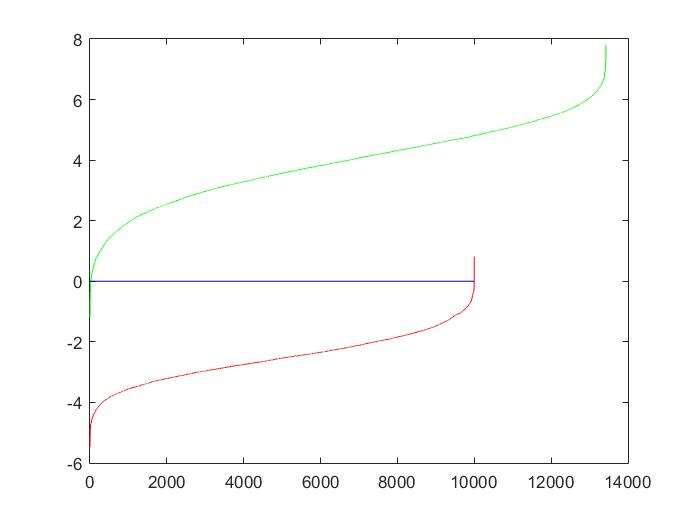

Project 5: Face Detection with a Sliding Window

Face Detection of a Class Scene
Overview
This project is aimed to implement the face detection algorithm using the sliding window. To complete the project, I followed the following pipeline as suggested by the course web:
- Extract the Positive and Negative Features
- Train the SVM Classifier
- Apply the Learned Model on Test Set
- Detection Display
Extract the Positive and Negative Features
In this part, I represented features of faces or non-faces with HOG using vl_hog in the vl_feat fuctions. The feature size is fixed as 36x36 while the cell size of the histograms can be set to different level to achieve different performance. I tried three different cell size, which are 3, 4 and 6. Usually the smaller the cell size, the better the result. Of course, smaller step size also takes more running time.
Extract the Positive Features
Since the size of each positive face image is 36x36, which is exactly the feature size, by calling vl_hog on given images can return the positive data. To achieve better performance, I also extracted the features of the mirrored images based on the original images. The total size of my positive data is thus 6713 x 2 = 13426.
Extract the Negative Features
Since the size of each non-face image is not fixed, before calling vl_hog on each image, I ramdomly picked the start points of the feature boxes. Also, to obtain negaitive data under different scaling, I also scaled down each image by the factor of 0.9 after each extaction process. I repetitively did so until the image is not big enough for a single extration.
Table 1: Results of HOG of different Cell Size
| step size = 6 | step size = 4 | step size = 3 |
Train the SVM Classifier
This step simply called the build-in svm learning function.
Table 2: Learning Results
|  | ||
| step size = 6 | step size = 4 | step size = 3 |
Apply the Learned Model on Test Set
I applied the sliding window approach to iterate all possible boxes of faces. If the confidence of a box is greater than some threshold, it is kept as a face box. To make sure that the small faces are not missed during the detectin, I scale down each test image by the feactor of 0.9 after each thorough detection. After I got all face boxes, I applie the non-max suppression on the boxes to gid rid of the repetitions. It turns out to be that the AP goes higher when cell size is smaller. AP is also incresed when lower threshold is used, but the number of false positive detections also increases.
Table 3: Face Detection Results
| Variable | Average Precision | Recall | Sample |
| step size = 6; threshold = 0.6 |  |
||
| step size = 6; threshold = 0.75 | |||
| step size = 4; threshold = 0.6 |  |
||
| step size = 4; threshold = 0.75 | |||
| step size = 3; threshold = 0.75 |  |
Face Detection of a Class Scene
To get rid of most false positive detections, I reset the threshold as 1.3 for this part.